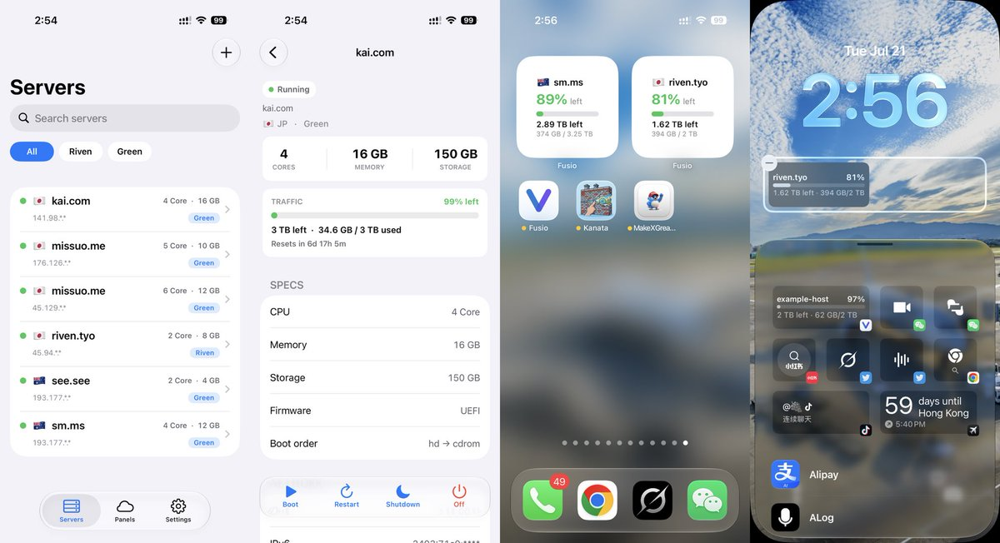

奶昔🥤
@realNyarime
@m1ssuo 大佬强强！

Vincent Yang
@m1ssuo
做了个新 App：Fusio 🚀
一个原生 iOS 客户端，把你在各家 VirtFusion 面板的 VPS (GreenCloud、Riven 等)聚合到一个列表里统一管理。
✅ 多面板聚合，实时状态、流量一目了然
✅ 开关机 / 重装 / VNC / SSH Key 全支持
✅ 桌面小组件显示剩余流量
✅ 无后端，API Token 直连面板
✅ 隐私模式 + https://t.co/6qI5IAMJMm